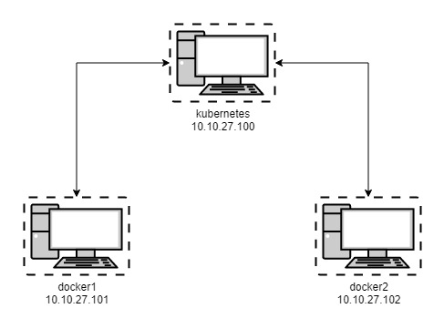

Cluster VM Network Diagram

Preparing the VMs
- Log into a freshly installed Ubuntu VM
- Run the following commands
# set the hostname
sudo hostnamectl set-hostname kubernetes
# update hosts file
sudo nano /etc/hosts - Update the 127.0.01 to the new hostname, kubernetes
- Press CTRL+O, Enter, CTRL+X to write the changes to hosts
- Continue with the following commands
# disable the firewall
sudo ufw disable
# disable the swap file
sudo swapoff -a
# disable swap partition
sudo sed -i '/ swap / s/^\(.*\)$/#\1/g' /etc/fstab
sudo echo "vm.swappiness=0" | sudo tee --append /etc/sysctl.conf
# update sysctl networking
cat <net.bridge.bridge-nf-call-ip6tables = 1
net.bridge.bridge-nf-call-iptables = 1
EOF
sudo sysctl --system
# apply the changes
sudo sysctl -p
Installing Docker
- Continue with the following commands in terminal
# install prerequisites
sudo apt install apt-transport-https ca-certificates curl software-properties-common gnupg-agent -y
# add docker gpg key
curl -fsSL https://download.docker.com/linux/ubuntu/gpg | sudo apt-key add -
# add docker software repository
sudo add-apt-repository "deb [arch=amd64] https://download.docker.com/linux/ubuntu $(lsb_release -cs) stable"
# install docker
sudo apt install docker-ce docker-compose containerd.io -y
# enable and start docker service
sudo systemctl enable docker && sudo systemctl start docker
# add the current user to the docker group
sudo usermod -aG docker $USER
# reauthenticate for the new group membership to take effect
su - $USER
Installing Kubernetes
- Continue with the following commands in terminal
# add kubernetes gpg key
curl -s https://packages.cloud.google.com/apt/doc/apt-key.gpg | sudo apt-key add -
# add the kubernetes software repo
echo 'deb http://apt.kubernetes.io/ kubernetes-xenial main' | sudo tee /etc/apt/sources.list.d/kubernetes.list
# update software repositories
sudo apt update
# install kubernetes
sudo apt install kubelet kubeadm kubectl -y
# shutdown the VM
sudo shutdown now
Cloning the VirtualBox VM
- In VirtualBox Manager, right click on the Kubernetes VM > Clone...
- Name the cloned VM Docker1 > Click Next
- Make sure Full Clone is selected > Click Clone
- In VirtualBox Manager, right click on the Ubuntu VM again > Clone...
- Name the cloned VM Docker2 > Click Next
- Make sure Full Clone is selected > Click Clone
- Right click the Kubernetes VM > Start > Normal Start
- Right click the Docker1 VM > Start > Normal Start
- Once the VM boots, log in and run the following commands
# set the hostname
sudo hostnamectl set-hostname docker1
# update hosts file
sudo nano /etc/hosts - Update the 127.0.01 to the new hostname, docker1
- Press CTRL+O, Enter, CTRL+X to write the changes to hosts
- Reboot the VM with the following command
sudo reboot now
- Back in VirtualBox Manager, right click the Docker2 VM > Start > Normal Start
- Once the VM boots, log in and run the following commands
# set the hostname
sudo hostnamectl set-hostname docker2
# update hosts file
sudo nano /etc/hosts - Update the 127.0.01 to the new hostname, docker2
- Press CTRL+O, Enter, CTRL+X to write the changes to hosts
- Reboot the VM with the following command
sudo reboot now
- At this point we have 3 Ubuntu VMs (kubernetes, docker1, docker2) running with swap disabled and docker and kubernetes installed
- All 3 VMs will need static IP addresses, I prefer to create static DHCP leases on my router for a single point of configuration, but the VM IP addresses can be set with the following command if needed
sudo nano /etc/netplan/01-installer-config.yaml
- Set DHCP4 = no and update the IP address, gateway and nameservers
dhcp4: no
addresses: [192.168.100.100/24]
gateway4: 192.168.100.1
nameservers:
addresses: [192.168.100.1,8.8.8.8]
Configuring the Kubernetes Cluster
Follow the steps below only on the kubernetes VM
- Log into the kubernetes VM and run the following commands in terminal
# initialize the cluster, copy the kubeadm join command for use later when joining the docker hosts to the cluster
sudo kubeadm init --pod-network-cidr=10.244.0.0/16 --apiserver-advertise-address=10.10.27.100 --kubernetes-version "1.20.4"
# create .kube config directory and copy configuration
mkdir -p $HOME/.kube
sudo cp -i /etc/kubernetes/admin.conf $HOME/.kube/config
sudo chown $(id -u):$(id -g) $HOME/.kube/config
# deploy the flannel network
kubectl apply -f https://raw.githubusercontent.com/coreos/flannel/master/Documentation/kube-flannel.yml
Joining Docker Nodes to the Cluster
Follow the steps below only on the docker1 and docker2 VMs
- Log into each of the Docker VMs and run the following commands in terminal
# paste the kubeadm join command copied earlier, the command will look similar to the one below
sudo kubeadm join 10.10.27.100:6443 --token ua6bhl.wuzsqhnf0h40hgxr \
--discovery-token-ca-cert-hash sha256:69a89f8d81dbfc08e4098f3d43e42c78429369ca41cb2954bcbcbb15405d69ef
Verifying the Cluster and Testing
Follow the steps below on the kubernetes VM
- Log into kubernetes VM and run the following commands in terminal
# list kubernetes nodes, all 3 VMs should be listed
kubectl get nodes
# deploy an example guestbook application
# deploy mongoDB
kubectl apply -f https://k8s.io/examples/application/guestbook/mongo-deployment.yaml
# deploy mongoDB service
kubectl apply -f https://k8s.io/examples/application/guestbook/mongo-service.yaml
# deploy guestbook frontend
kubectl apply -f https://k8s.io/examples/application/guestbook/frontend-deployment.yaml
# deploy frontend service
kubectl apply -f https://k8s.io/examples/application/guestbook/frontend-service.yaml
# watch as the pods are created and start running, press ctrl+c once all pods are in running status
watch -n 3 kubectl get pods
# forward host port 8080 to container port 80
kubectl port-forward --address 0.0.0.0 svc/frontend 8080:80
Removing the Test Deployments
Follow the steps below on the kubernetes VM
- Log into kubernetes VM and run the following commands in terminal
# list the running pods
kubectl get pods
# delete the test pods created earlier
kubectl delete deployment -l app.kubernetes.io/name=mongo
kubectl delete service -l app.kubernetes.io/name=mongo
kubectl delete deployment -l app.kubernetes.io/name=guestbook
kubectl delete service -l app.kubernetes.io/name=guestbook
# watch as the pods are terminated and deleted, press ctrl+c to return to the terminal
watch -n 3 kubectl get pods